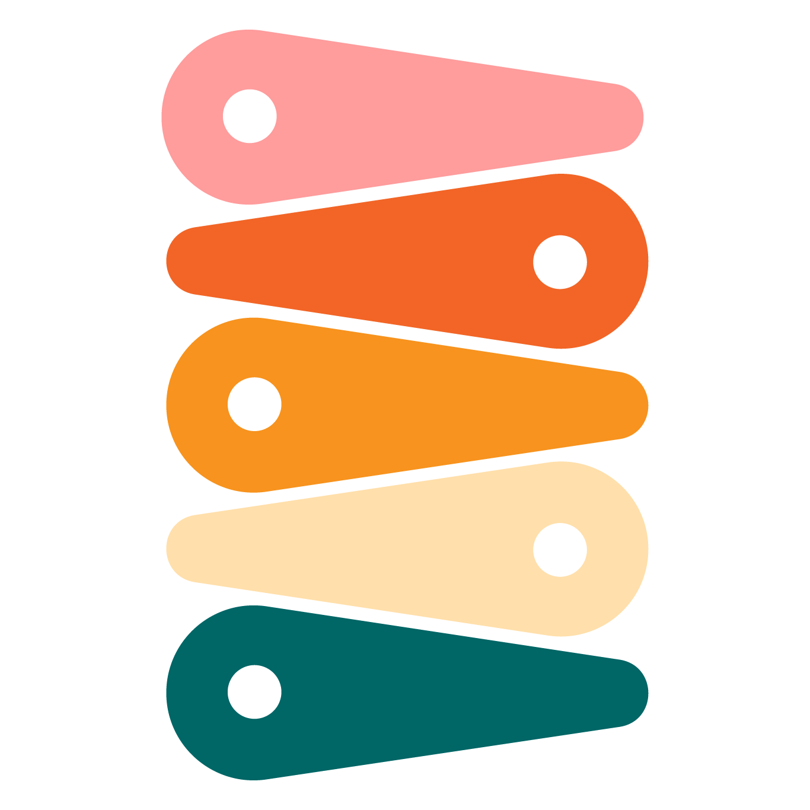
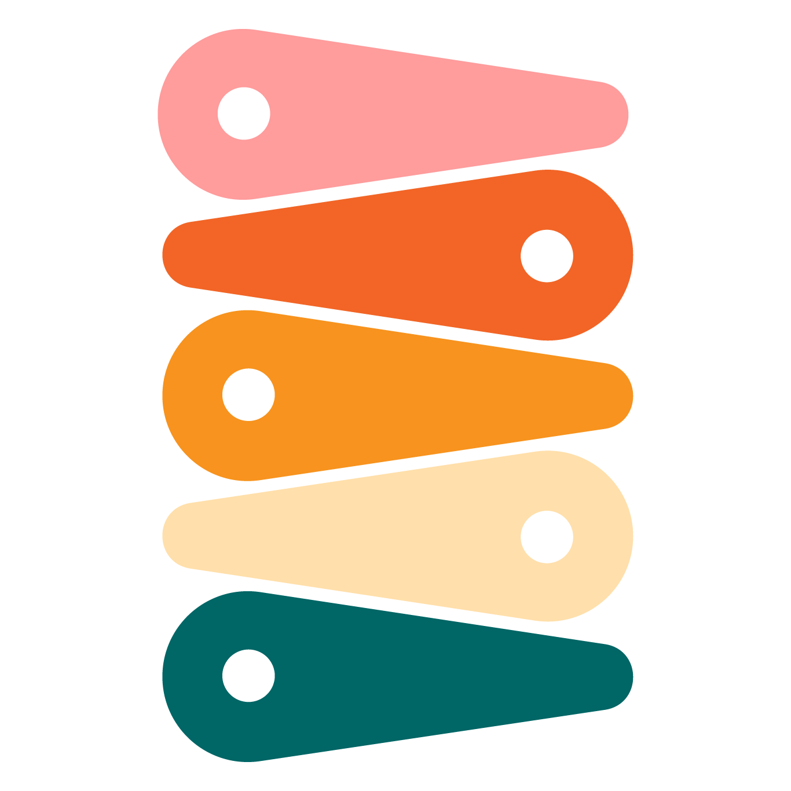

Peyton Wood
Harvest
Brand Redesign*
This is a brand concept I created for the time tracking brand Harvest. I created a bold and bright brand concept, evolving their current color palette to include a wider variety. My goal was to create a new visual identity that represents the app's core mission - to help users track their employee's hours, increase productivity and streamline their workflow. To achieve this, I developed a modern and sleek logo that combines an "H" and a clock to represent Harvest's time tracking capabilities
*This is a concept project
 

I created an eclectic and bold suite of digital social media and web elements for the Harvest brand redesign. These Instagram stories and posts feature a bright and engaging color palette of orange, pink, and teal, with bold typography and striking graphics that highlight key features of the app. These elements are designed to attract and engage users across various platforms, creating a cohesive and visually striking brand identity that stands out in a crowded market.
As a part of the brand redesign, I also created a logo animation for Harvest that adds an extra layer of energy to the new visual identity. The animation features the bar of the "H" in the logo swinging around like a clock, further reinforcing the main time-tracking component available on the platform.